Who is Barney?
And what is he good for?
Cohen Group Meeting
2025-03-25
Research focus:
Use phylodynamic tools to characterize epidemics at various time-scales
Phylodynamic insights
- Topology
- Evolutionary rate
- Migration rates
- Migration history
- Population size
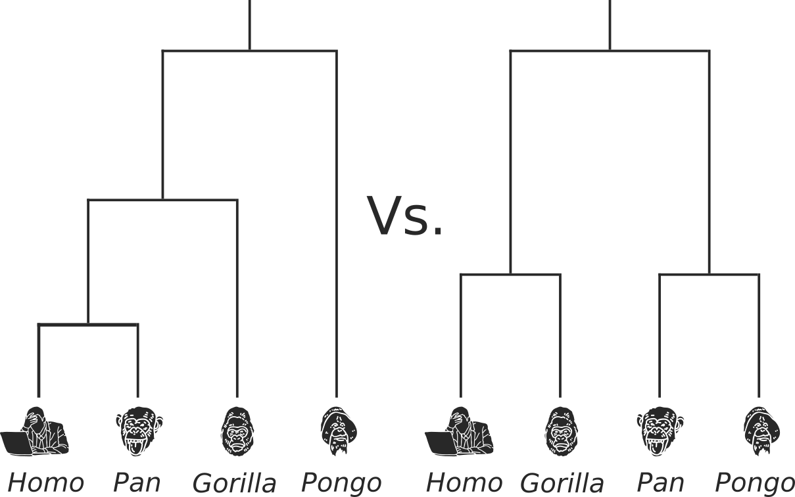
Phylodynamic insights
- Topology
- Evolutionary rate
- Migration rates
- Migration history
- Population size

Phylodynamic insights
- Topology
- Evolutionary rate
- Migration rates
- Migration history
- Population size
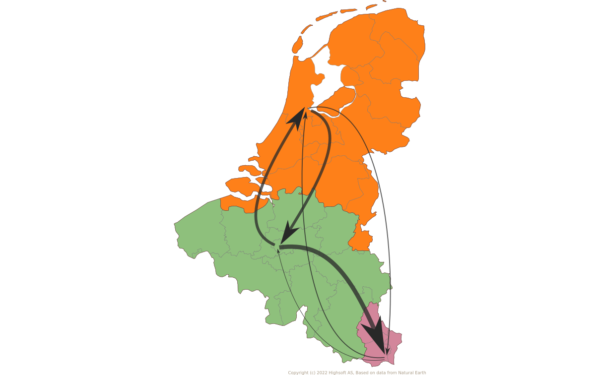
Phylodynamic insights
- Topology
- Evolutionary rate
- Migration rates
- Migration history
- Population size

Phylodynamic insights
- Topology
- Evolutionary rate
- Migration rates
- Migration history
- Population size

In review*:
BA.1 in Pakistan
A recent epidemic withing a global pandemic
Driving questions
- How does a pathogen initially enter a country and influence local epidemics?
- How can we use phylodynamic methods to overcome global disparities in sequencing?
Data in this analysis
- 1690 global BA.1 genomes
- 63 from Pakistan
- 15 with travel-histories
- 32 discrete geographic areas
- Pakistan and neighboring countries
- Regions of China
- UN Georegions
- Roughly one third of Pakistan's fifth wave
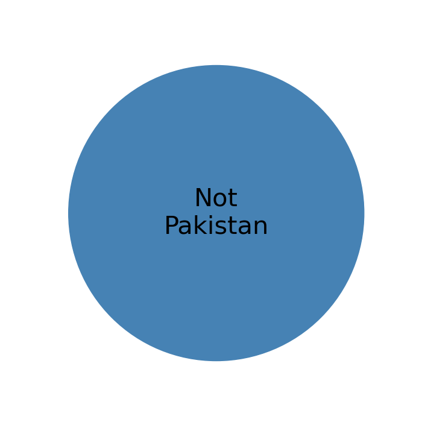
Breakdown of GISAID sequences by location
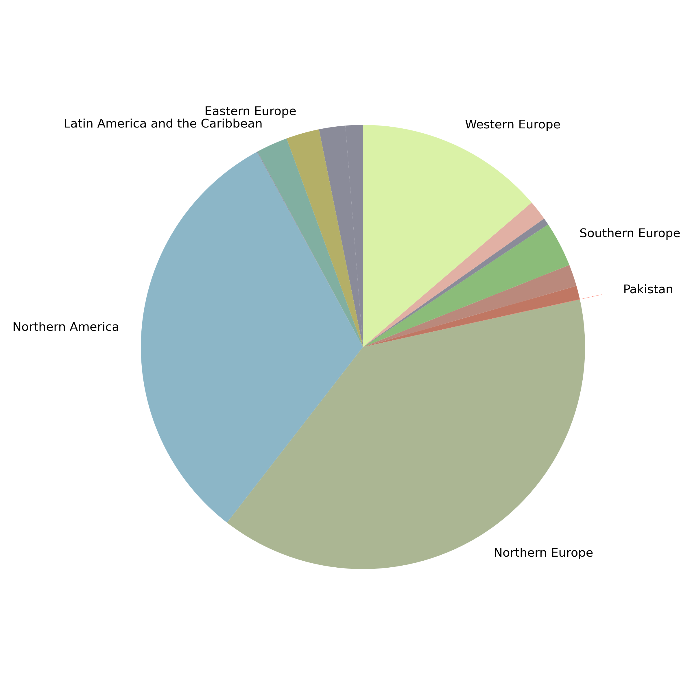
Pakistan's Omicron epidemic
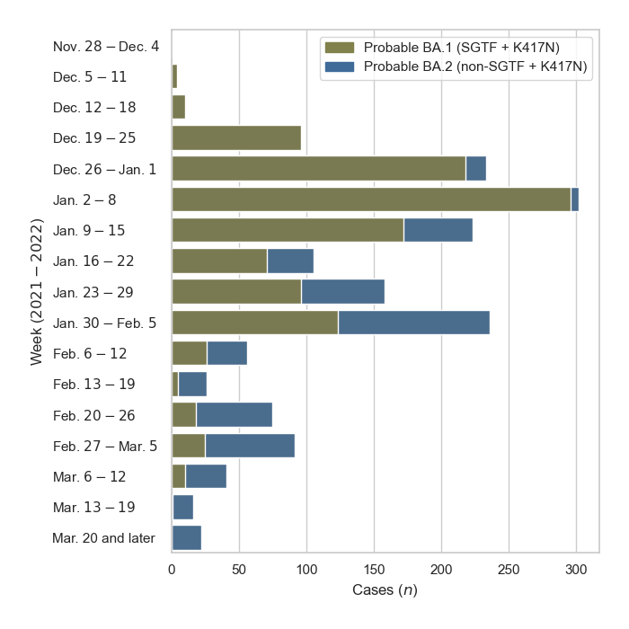
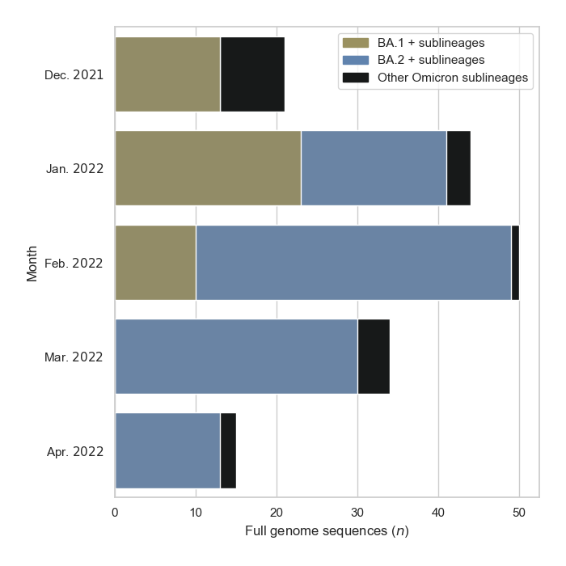
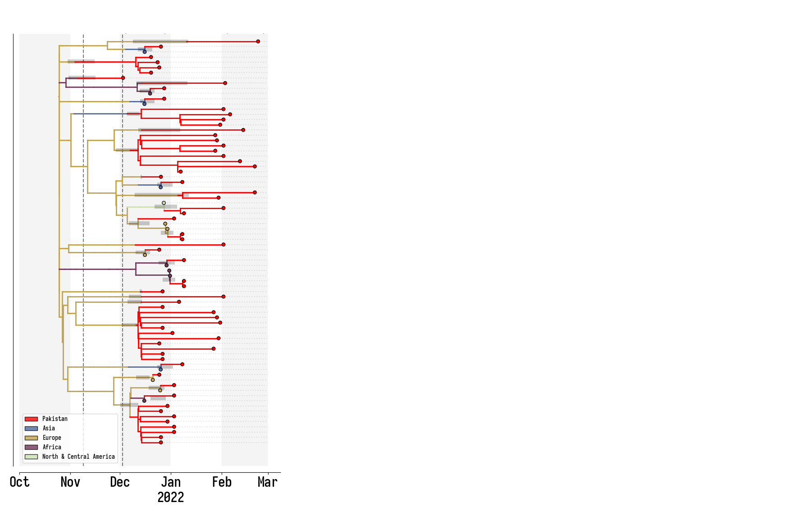
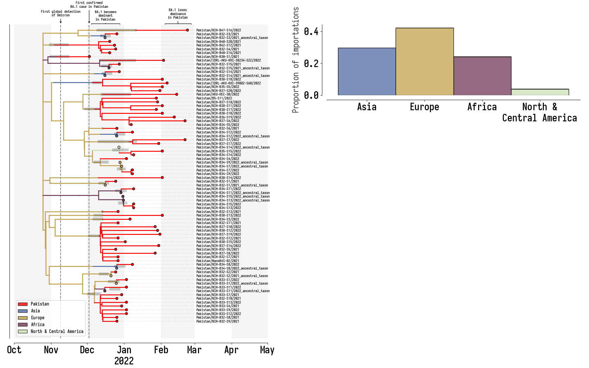
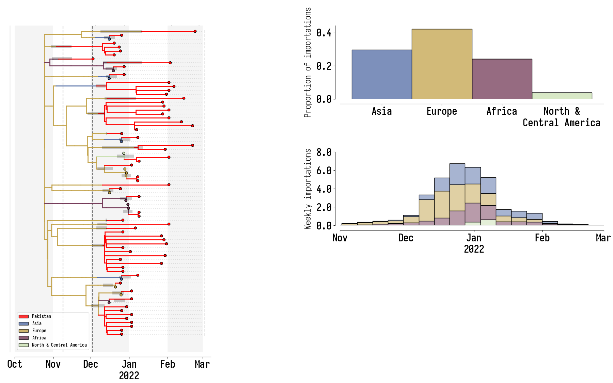
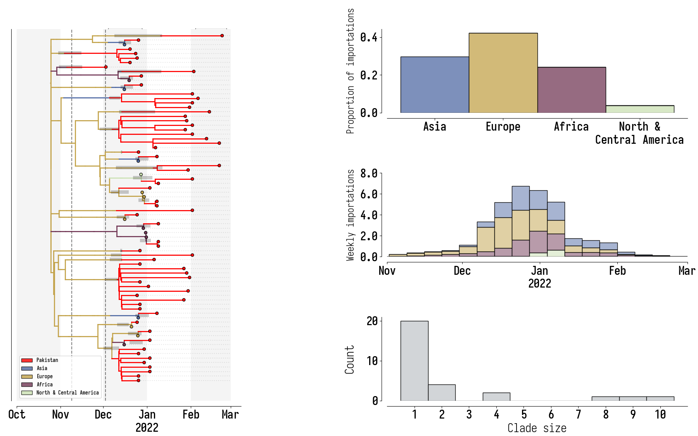
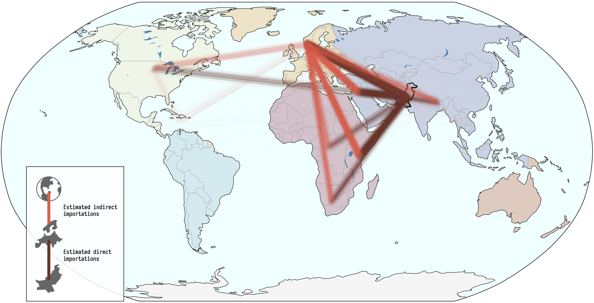
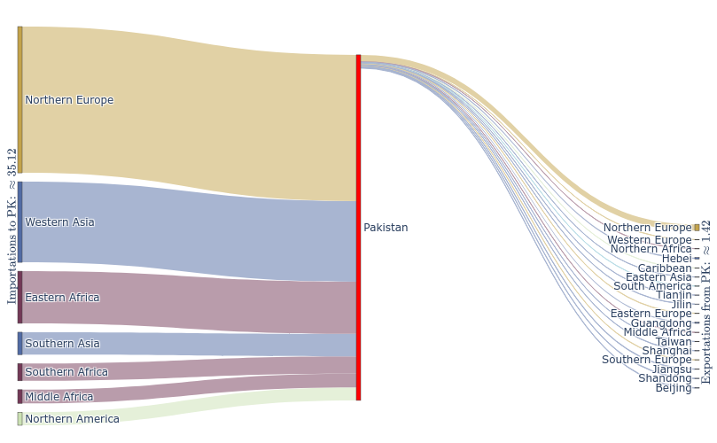
Key Takeaways
- BA.1 was the primary driver of the beginning of Pakistan's Omicron epidemic.
- Air traffic from Northern Europe caused most importations.
- Disparities in sequencing made analysis difficult and potentially biased.
Pet project:
BALTIC
Backronymed Adaptable Lightweight Tree Import Code
Guiding goals:
- Python/matplotlib library for publication-quality figures;
- Handle BEAST annotations;
- Flexibly handle time/divergence calibrated phylogenies;
- I/O for most common tree formats;
- Visualization submodule:
- Figure design;
- Map integration;
- Derived tree visualization.
figtree
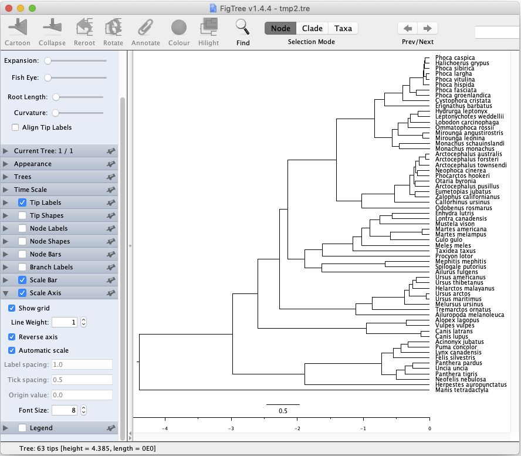
ggtree
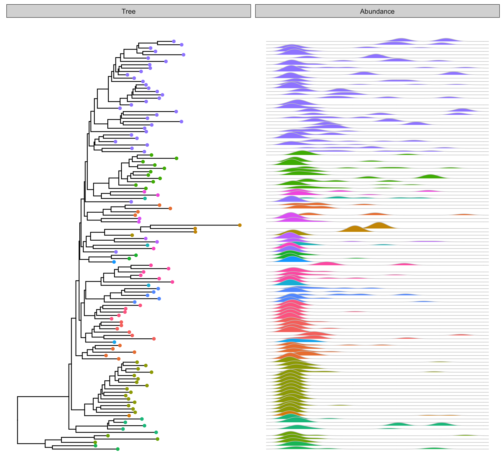
ete 3
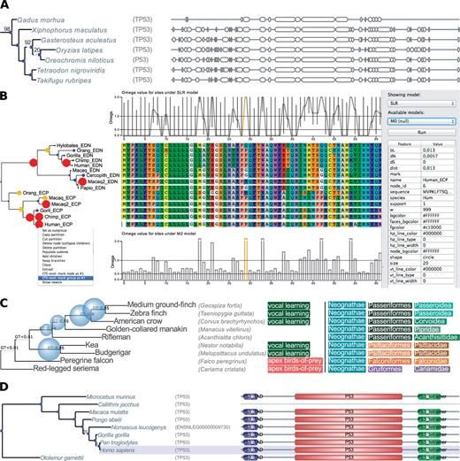